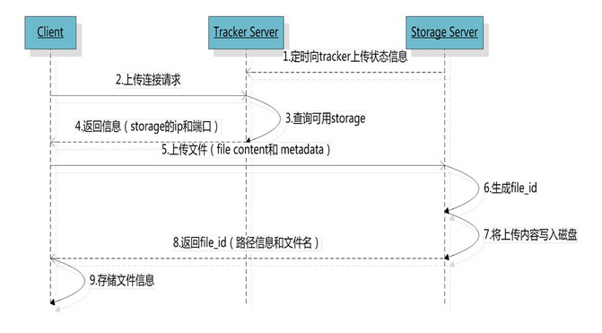

FastDFS有两个重要的角色：跟踪服务器（tracker）和存储服务器（storage）。
1. 存储服务器（storage server）
FastDFS中的storage是采用分组（group）的方式来存储文件。
一个group中可以由一个或多个storage server组成，同一个group中的storage server是互备关系，即同一个group中的每个storage server相互进行文件同步（由专门的线程来完成），最终达到每个storage server中存储的文件是完全一致的。
一个storage集群是由一个或多个group组成。storage集群的存储总容量是集群中所有的group的存储总容量之和。由于同一个group中的storage server是互备关系，因此每个group的存储总容量是该group中存储容量最小的storage server的存储容量。因此，同一个group中的storage server的硬件配置应尽量保持一致，以免造成浪费。
storage server提供了文件上传、文件删除、文件访问（下载）等基础的功能。文件访问（下载）可以通过使用nginx扩展模块来完成（即每个storage server中都需要安装一个nginx应用）。
2. 跟踪服务器（tracker server）
FastDFS中的tracker主要的作用是负载均衡和调度。tracker server可以有多个，tracker server之间是对等的关系，没有主从之分。当客户端连接tracker server时，如果tracker server有多个，客户端会任意选择其中的一个来连接。storage server会周期性定时的向集群中的所有tracker server报告其分组和状态等信息（storage server会通过启动一个单独的线程来完成）。
3. 客户端（client）
以文件上传为例，client、tracker server、storage server的时序图如下（图片摘自网络）：

4. 部署概况
| 角色 |
IP |
端口 |
| tracker |
10.10.10.121 |
22122 |
| tracker |
10.10.10.122 |
22122 |
| tracker |
10.10.10.123 |
22122 |
| storage |
10.10.10.121 |
22122 |
| storage |
10.10.10.122 |
22122 |
| storage |
10.10.10.123 |
22122 |
5. 安装清单
 | 注：本文示例每台虚拟机都分别安装一个tracker和一个storage。10.10.10.12110.10.10.12210.10.10.123三台机器安装和配置均相同，按以下步骤进行。 |
5.1 libfastcommon 安装
解压缩并进入解压缩后的文件夹的根目录：
执行编译安装：
5.2 fastdfs 安装
解压缩并进入解压缩后的文件夹的根目录：
执行编译安装：
| 安装完成之后，在系统的/etc路径下会自动生成一个/fdfs目录，该目录下是FastDFS相关的一些示例配置文件。 |
将当前路径下 conf 目录里面的 anti-steal.jpg，http.conf，mime.types 复制到 /etc/fdfs 目录中：
5.2.1 tracker 配置
将/etc/fdfs/tracker.conf.sample重命名为/etc/fdfs/tracker.conf：
编辑 tracker 配置文件：
主要配置及说明：
1 2 3 4 5 6 7 8 9 10 11 12 13 14 15 16 17 18 19 20 21 22 23 24 25 26 27 28 29 30 31 32 33 34 35 36 37 38 39 40 41 42 43 44 45
| # 端口 port=22122 # # 连接超时时间，单位秒，默认是30 connect_timeout=30 # # 网络超时时间，单位秒，默认是60 network_timeout=60 # # 数据文件和日志文件存储的基路径 base_path=/home/fanlychie/fastdfs # # 最大并发连接数 max_connections=256 # # 上传文件时，选group的策略 # 0：轮询group # 1：使用特定的group # 2：选择可用空间最大的group store_lookup=2 # # 指定文件上传到哪个group。当store_lookup设置为1时，必须指定这个group的名称。当store_lookup是其它值时该属性可以不设值 store_group=group1 # # 上传文件时，选storage server的策略 # 0：轮询 # 1：根据配置的IP的顺序 # 2：根据配置的优先级 store_server=0 # # 上传文件时，选存储介质（磁盘或挂载点）的策略 # 0：轮询 # 1：优先使用最大可用空间的路径 store_path=0 # # 下载文件时，选storage server的策略 # 0：轮询 # 1：当前文件上传的源storage server download_server=0 # # 系统保留的存储空间 reserved_storage_space = 1% # # HTTP端口 http.server_port=8080
|
5.2.2 storage 配置
将/etc/fdfs/storage.conf.sample重命名为/etc/fdfs/storage.conf：
编辑 storage 配置文件：
主要配置及说明：
1 2 3 4 5 6 7 8 9 10 11 12 13 14 15 16 17 18 19 20 21 22 23 24 25 26
| # 所属group的名称 group_name=group1 # # 端口 port=23000 # # 连接超时时间，单位秒，默认是30 connect_timeout=30 # # 网络超时时间，单位秒，默认是60 network_timeout=60 # # 数据文件和日志文件存储的基路径 base_path=/home/fanlychie/fastdfs/storage # # 最大并发连接数 max_connections=256 # # 文件存储的路径。可以配置多个 store_path0=/home/fanlychie/fastdfs/storage #store_path1=/home/fanlychie/fastdfs/storage1 # # tracker server的IP和端口。如果有多个则配置多行 tracker_server=10.10.10.121:22122 tracker_server=10.10.10.122:22122 tracker_server=10.10.10.123:22122
|
5.2.3 client 配置
将/etc/fdfs/client.conf.sample重命名为/etc/fdfs/client.conf：
编辑 client 配置文件：
主要配置及说明：
1 2 3 4 5 6 7
| # 数据文件和日志文件存储的基路径 base_path=/home/fanlychie/fastdfs # # tracker server的IP和端口。如果有多个则配置多行 tracker_server=10.10.10.121:22122 tracker_server=10.10.10.122:22122 tracker_server=10.10.10.123:22122
|
5.3 fastdfs-nginx-module 安装
解压缩并进入解压缩后的文件夹的根目录：
编辑src/mod_fastdfs.conf：
主要配置及说明：
1 2 3 4 5 6 7 8 9 10 11 12 13
| # tracker server的IP和端口。如果有多个则配置多行 tracker_server=10.10.10.121:22122 tracker_server=10.10.10.122:22122 tracker_server=10.10.10.123:22122 # # 如果请求的url地址中包含了group_name（如“group1/M00/00/00/xxx”）则应设为true。 # 如果请求的url地址中不包含group_name（如“/M00/00/00/xxx”）则应设为false。 url_have_group_name = true # # 文件存储的路径。可以配置多个 # 必须配置与本机storage.conf中配置的store_path0路径相同 store_path0=/home/fanlychie/fastdfs/storage #store_path1=/home/fanlychie/fastdfs/storage1
|
复制文件src/mod_fastdfs.conf到/etc/fdfs/目录下：
1
| # cp src/mod_fastdfs.conf /etc/fdfs/
|
编辑src/config：
找到CORE_INCS的配置行，去掉路径中的/local，改为如下并保存退出：
1
| CORE_INCS="$CORE_INCS /usr/include/fastdfs /usr/include/fastcommon/"
|
5.4 nginx 安装
由于FastDFS提供的HTTP服务较为简单，它无法提供负载均衡等高性能的服务。因此，FastDFS通常会结合Nginx来使用。安装Nginx所需的依赖有：
- nginx 的 gzip 模块（压缩）需要依赖 zlib 库
- nginx 的 ssl 模块（支持 HTTPS）需要依赖 openssl 库
- nginx 的 rewrite 模块（支持 URL 重写）需要依赖 pcre 库
5.4.1 pcre 安装
解压缩并进入解压缩后的文件夹的根目录：
1
| # tar zxvf pcre-8.36.tar.gz && cd pcre-8.36
|
执行编译安装：
1
| # ./configure && make && make install
|
创建软连接（64位系统）：
1
| # ln -s /usr/local/lib/libpcre.so.1 /lib64
|
创建软连接（32位系统）：
1
| # ln -s /usr/local/lib/libpcre.so.1 /lib
|
5.4.2 zlib 安装
解压缩并进入解压缩后的文件夹的根目录：
1
| # tar zxvf zlib-1.2.11.tar.gz && cd zlib-1.2.11
|
执行编译安装：
1
| # ./configure && make && make install
|
5.4.3 openssl 安装
解压缩并进入解压缩后的文件夹的根目录：
1
| # tar zxvf openssl-1.0.2l.tar.gz && cd openssl-1.0.2l
|
执行编译安装：
1
| # ./config && make && make install
|
5.4.4 nginx 安装
解压缩并进入解压缩后的文件夹的根目录：
1
| # tar zxvf nginx-1.12.1.tar.gz && cd nginx-1.12.1
|
编译安装（注意修改--add-module的路径）：
1
| # ./configure --prefix=/usr/local/nginx --add-module=/usr/local/src/fastdfs-nginx-module/src/ && make && make install
|
| –add-module的路径需要改成你服务上上面配置好的fastdfs-nginx-module对应的路径。
|
编辑 nginx 配置文件：
1
| # vi /usr/local/nginx/conf/nginx.conf
|
添加如下配置：
1 2 3 4
| location /group1/M00 { root /home/fanlychie/fastdfs/storage/data/; ngx_fastdfs_module; }
|
| root指定到storage配置的${base_path}/data/目录下。
|
| ngx_fastdfs_module是FastDFS模块名称，该名称固定不需要改变。
|
5.5 启动服务
5.5.1 tracker
启动命令：
停止命令：
重启命令：
5.5.2 storage
启动命令：
停止命令：
重启命令：
5.5.3 nginx
启动命令：
1
| # /usr/local/nginx/sbin/nginx
|
停止命令：
1
| # /usr/local/nginx/sbin/nginx -s stop
|
重新加载命令：
1
| # /usr/local/nginx/sbin/nginx -s reload
|
| 10.10.10.12110.10.10.12210.10.10.123三台机器的tracker配置相同。
|
6. storage 配置
编辑tracker的配置文件：